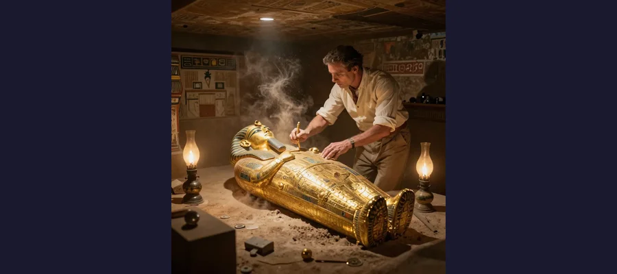
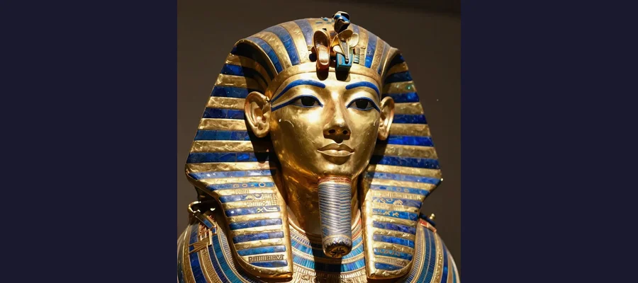

The Curse of Tutankhamun: Myth, Media, and the Science Behind Egypt's Most Famous Legend

The treasures of Tutankhamun's tomb sparked a century of curse myths — but the truth is even more fascinating.
On November 4, 1922, a team of Egyptian workers led by the British archaeologist Howard Carter uncovered a step cut into the bedrock of the Valley of the Kings — a step that led down to a sealed doorway bearing the cartouches of a pharaoh the world had nearly forgotten. Behind that doorway lay Tutankhamun, the boy-king who had died around 1323 BCE at approximately nineteen years of age, buried in a tomb crammed with over five thousand objects: golden chariots, jewel-encrusted jewelry, a solid gold death mask of breathtaking beauty, and a mummy lying within a nest of coffins, the innermost made of 110 kilograms of solid gold. It was the most spectacular archaeological discovery of the twentieth century — the only known near-intact royal burial from ancient Egypt. And within weeks, the story took a darker turn. Lord Carnarvon, Carter's financial backer, died in Cairo on April 5, 1923, just weeks after the tomb's ceremonial opening. The lights of Cairo were said to have gone out at the moment of his death. Back in England, Carnarvon's dog howled and died simultaneously. A cobra — the symbol of Egyptian pharaonic power — was reportedly found inside Carter's pet canary's cage on the very day the tomb was opened. The press went wild. "The Curse of Tutankhamun" was born — a tale of supernatural vengeance so compelling that it has persisted for over a century, inspiring films, novels, and a permanent place in the popular imagination. But what really happened? Who died, who survived, and what does science say about the so-called mummy's curse?
The truth about Tutankhamun's curse is more interesting than the myth — because the real story reveals as much about us as it does about the ancient Egyptians. It is a story about media sensationalism, the psychology of superstition, the genuine biological hazards lurking in ancient tombs, and the human compulsion to find patterns and meaning in random events. The curse of the pharaohs may not be supernatural, but the forces that created and sustained the myth — fear of death, fascination with the exotic, and the profit motive of a voracious press — are every bit as powerful as any ancient spell.
The Day the Tomb Was Opened: Carter's Triumph
Howard Carter had been digging in Egypt since he was seventeen years old. By 1922, he was forty-eight and had been searching the Valley of the Kings for fifteen years under the patronage of George Herbert, the 5th Earl of Carnarvon, a wealthy English aristocrat who had sunk a fortune into the hunt for an undiscovered royal tomb. Carnarvon was losing patience. Year after year, Carter had produced little of significance, and the earl was on the verge of withdrawing his funding. Carter persuaded him to finance one final season. He believed that one area of the valley — near the tomb of Ramesses VI, where ancient workmen's huts had been found — still held secrets.
On November 4, 1922, Carter's workers uncovered a step. By the next day, they had exposed a staircase descending to a plastered doorway bearing the seals of the royal necropolis. Carter immediately wired Carnarvon: "At last have made wonderful discovery in Valley a magnificent tomb with seals intact re-covered same for your arrival congratulations." Carnarvon arrived in Egypt on November 23. On November 26, Carter made a small hole in the second doorway, inserted a candle, and peered inside. When Carnarvon asked if he could see anything, Carter reportedly replied: "Yes, wonderful things." What he saw was an antechamber stuffed with gilded couches, alabaster vessels, chariots, and golden shrines — the treasure of a pharaoh undisturbed for over three thousand years.
The excavation that followed was one of the most meticulous in archaeological history. Carter spent nearly a decade documenting and removing the tomb's contents, photographing everything in situ, and conserving fragile artifacts. The discovery made Tutankhamun the most famous pharaoh in the world — a curious fate for a king who had ruled for only about a decade and died in his teens, whose greatest achievement, in historical terms, was the restoration of the traditional Egyptian religion after the upheavals of Akhenaten's monotheistic revolution. The tomb's splendor — the pyramids had been stripped bare millennia ago — was a revelation, a window into the wealth and artistry of the New Kingdom at its height.
🔥 The Canary and the Cobra
One of the most frequently repeated stories of the Tutankhamun curse concerns Carter's pet yellow canary. According to popular accounts, Carter brought the bird to the excavation site, and the Egyptian workers considered it a good-luck charm. On the day the tomb was discovered, so the story goes, a cobra — the ancient symbol of pharaonic power and divine protection, the same creature depicted on the brow of Tutankhamun's golden death mask — was found in the canary's cage, having eaten the bird. The omen was immediate and chilling: the cobra had taken Carter's "voice," just as the pharaoh's spirit would take the lives of those who disturbed his rest. The story is almost certainly apocryphal — Carter never mentioned it in his meticulous records, and no contemporary account corroborates it — but it illustrates how quickly and eagerly curse narratives attached themselves to the discovery. A good story, it turned out, needed no evidence to survive.

Howard Carter peers into the burial chamber, glimpsing "wonderful things" for the first time in 3,000 years.
The Death of Lord Carnarvon and the Birth of a Myth
Lord Carnarvon died on April 5, 1923, in the Continental-Savoy Hotel in Cairo, less than six months after the tomb's ceremonial opening. The official cause of death was blood poisoning resulting from an infected mosquito bite on his cheek, complicated by pneumonia. He was fifty-six years old and had been in poor health for years, suffering from a chronic respiratory condition that had led his doctors to recommend the dry Egyptian climate in the first place. The death of an elderly, sickly aristocrat from an infected insect bite was, by any rational measure, unremarkable. But the press transformed it into something extraordinary.
At the moment of Carnarvon's death, the story went, all the lights in Cairo went out. (In truth, Cairo's electrical supply was notoriously unreliable, and blackouts were common.) Back at Carnarvon's estate in Highclere Castle in Hampshire, his beloved dog Suzie allegedly howled and dropped dead at the precise moment of her master's demise. (The story cannot be verified.) The press — particularly the London Daily Mail and its aggressive correspondent Arthur Merton — seized upon these details and wove them into a narrative of supernatural revenge. The idea of a pharaoh's curse was irresistible: it combined the exotic glamour of ancient Egypt, the frisson of the supernatural, and the moral satisfaction of seeing arrogant modern intruders punished for violating the sanctity of the dead.
The most influential amplifier of the curse story was Sir Arthur Conan Doyle, the creator of Sherlock Holmes and a fervent believer in spiritualism and the paranormal. Conan Doyle publicly speculated that "elementals" — malicious spirit entities placed by Egyptian priests to guard the tomb — might have been responsible for Carnarvon's death. His comments, reported worldwide, lent the curse story the credibility of one of the most famous authors in the English-speaking world. When Conan Doyle spoke, people listened — even when he was speaking about spirit warriors guarding a 3,000-year-old tomb. Other newspapers invented or exaggerated details: fake inscriptions threatening doom on tomb violators were widely reported (no such inscription existed in Tutankhamun's tomb), and the deaths of anyone even tangentially connected to the excavation were eagerly catalogued and attributed to the curse.
📰 The Invented Inscription
One of the most durable elements of the Tutankhamun curse legend is the alleged inscription on or near the tomb threatening intruders with death. The most commonly cited version reads: "Death shall come on swift wings to him who disturbs the peace of the king" or similar variations. There is only one problem: no such inscription exists. Carter himself explicitly denied finding any curse text in or near the tomb, and no subsequent investigation has found one. The "inscription" was a fabrication by journalists, probably inspired by genuine (but much less dramatic) curse texts found in earlier, unrelated Egyptian tombs, such as the mastaba of Khentika Ikhekhi at Saqqara, which contains warnings directed at priests to maintain the tomb's ritual purity — not threats against archaeologists. The power of a good fabrication, once printed, proved greater than the power of truth. The invented inscription has been repeated in books, documentaries, and articles for a century and shows no sign of dying.

Tutankhamun's golden death mask became the face of the curse myth — though no actual curse inscription was ever found.
The Body Count: Who Really Died?
The list of people "killed by the curse" grew rapidly in the press, but a careful examination reveals a very different picture. A study published in the British Medical Journal in 2002 analyzed the survival of 44 Westerners who were in Egypt during the excavation and could be documented as having been exposed to the tomb. The results were decisive: there was no statistical association between exposure to the tomb and premature death. Of the 44 individuals, 25 were exposed to the tomb. Their average age at death was 70 years. The control group (those not exposed) had a similar mortality pattern. Lord Carnarvon was the only person closely associated with the excavation who died within the first year. Howard Carter himself, the man who spent more time in the tomb than anyone, lived until 1939, dying of lymphoma at the age of sixty-four — seventeen years after opening the tomb.
- Lord Carnarvon (died April 5, 1923) — Blood poisoning from infected mosquito bite, complicated by pneumonia; had been in poor health for years
- George Jay Gould (died May 16, 1923) — American financier who visited the tomb; died of pneumonia after developing a cold. Press blamed the curse.
- Prince Ali Kamel Fahmy Bey (died July 10, 1923) — Egyptian prince who visited the tomb; shot and killed by his wife. Press blamed the curse.
- Arthur Mace (died 1928) — Member of Carter's excavation team; died of pneumonia after years of declining health. Often cited as a curse victim.
- Richard Bethell (died 1929) — Carter's secretary; found dead in his bed, cause attributed to circulatory failure. Press blamed the curse.
- Howard Carter (died March 2, 1939) — Lived 17 years after opening the tomb; died of lymphoma at age 64. Not a curse victim.
The Science of the Curse: What Lurks in Ancient Tombs?
The failure of the supernatural curse theory does not mean that ancient tombs are harmless. Since the 1960s, scientists have proposed several biological explanations for why some people who entered Egyptian tombs became ill. The most widely discussed is the presence of pathogenic fungi, particularly Aspergillus species such as Aspergillus niger and Aspergillus flavus, which can cause serious respiratory infections in immunocompromised individuals. These fungi thrive in warm, dark, enclosed environments — exactly the conditions found in sealed tombs. When a tomb is opened after millennia, fungal spores can be aerosolized and inhaled, potentially causing aspergillosis, a dangerous lung infection. Aspergillus spores have been recovered from several Egyptian mummies and tomb environments, and some researchers have suggested that high concentrations could explain the respiratory deaths of some early Egyptologists.
Other proposed biological agents include bacteria (such as Bacillus species that can form durable spores surviving for centuries), ammonia gas from decomposing organic materials, and formaldehyde and other toxic chemicals used in ancient mummification. A 1999 study by the microbiologist Ezzeddin Taha found potentially dangerous molds in several Egyptian tombs. However, the connection between these agents and specific deaths in the Tutankhamun case remains speculative. No one has demonstrated that Tutankhamun's tomb contained unusual concentrations of pathogens, and many of the "curse deaths" (such as Prince Ali Kamel Fahmy Bey, who was shot by his wife) clearly had nothing to do with biology. The scientific hypothesis is plausible but unproven in this specific case — and in any event, it explains illness, not a pattern of supernatural retribution.
🧪 The Statistics Don't Lie
The most powerful refutation of the Tutankhamun curse comes from simple mortality statistics. If the curse were real, we would expect the people most exposed to the tomb to die sooner than those who were not exposed. They did not. The 2002 British Medical Journal study found that the 25 people exposed to the tomb had an average age at death of 70 years, compared with 75 years for the unexposed group — a difference that was not statistically significant. Carter himself outlived the excavation by nearly two decades. Of the 44 people studied, only four died within the first decade, and none of those deaths occurred under mysterious circumstances. The statistical reality is unambiguous: opening Tutankhamun's tomb was not dangerous. The curse was a media creation, sustained by selective attention (remembering the deaths, forgetting the survivors) and the irresistible narrative appeal of supernatural revenge. The same human tendency to see patterns in randomness that drives belief in the Shroud of Turin and the mystery of the Rosetta Stone's decipherment also fuels the persistence of the curse myth.
Why the Curse Myth Endures
The Tutankhamun curse persists because it satisfies deep psychological needs that have nothing to do with ancient Egypt. It speaks to the fear of death and the taboo against disturbing the dead — a fear so fundamental that virtually every human culture has developed rituals and beliefs about the proper treatment of corpses. It appeals to the desire for cosmic justice, the comforting idea that violations of sacred boundaries will be punished, even if the punishment takes decades or centuries to arrive. It exploits the allure of the exotic, the Western fascination with ancient Egypt as a land of magic, mystery, and hidden power that stretches from the Great Sphinx to the Ark of the Covenant. And it serves a commercial purpose: curse stories sell newspapers, books, movie tickets, and museum passes. The curse of Tutankhamun is not a story about ancient Egypt. It is a story about the modern world's relationship with the past — a relationship built on desire, guilt, and the profit motive.
- Tomb toxins and fungi — Aspergillus and other pathogens can survive in sealed tombs and may cause respiratory illness, but have not been specifically linked to Tutankhamun curse deaths
- Statistical evidence — BMJ 2002 study found no significant difference in mortality between tomb-exposed and non-exposed individuals
- Media fabrication — The curse inscription, the Cairo blackout, and many other curse details were invented or exaggerated by journalists
- Arthur Conan Doyle's influence — His public endorsement of the curse gave it credibility far beyond what the evidence warranted
- Howard Carter's survival — The most exposed person of all lived 17 years after opening the tomb, dying of natural causes at 64
☤ The Curse That Cursed Itself
The curse of Tutankhamun is one of the great ironies of archaeological history. Howard Carter's discovery was a triumph of patience, skill, and determination — a moment when the modern world reached across three thousand years and touched the ancient one directly. The objects from the tomb — the golden mask, the gilded shrines, the jewelry, the furniture — are among the most recognized and admired artifacts in human history. They have been seen by millions and have transformed our understanding of ancient Egyptian culture. And yet, for much of the public, the first association with Tutankhamun is not beauty, artistry, or historical knowledge — it is a curse that never existed, fabricated by journalists, amplified by a famous author of detective fiction, and sustained by the human weakness for a good ghost story. The real lesson of the Tutankhamun curse is not about ancient magic but about modern credulity — about how easily a compelling narrative can override evidence, how readily we see patterns in random events, and how powerfully we want to believe that the dead can reach across the centuries and touch the living. Like the ongoing search for Cleopatra's tomb, the questions raised by the Dead Sea Scrolls, the recent discovery of Thutmose II's tomb, and the enduring enigma of the Great Sphinx, the Tutankhamun curse reminds us that the past is never just the past — it is a mirror in which we see our own hopes, fears, and failings reflected. The pharaohs had no need of curses. The living were quite capable of inventing their own.
Frequently Asked Questions
Is the curse of Tutankhamun real?
No. There is no credible evidence that a supernatural curse was placed on Tutankhamun's tomb or that the deaths associated with the excavation were caused by anything other than coincidence, pre-existing health conditions, or unrelated events. A 2002 study published in the British Medical Journal found no statistically significant difference in mortality between people who were exposed to the tomb and those who were not. Howard Carter, the archaeologist who spent the most time inside the tomb, lived for seventeen years after its discovery. The "curse" was a media creation, fueled by sensationalist journalism and the public fascination with the supernatural.
How many people died after opening Tutankhamun's tomb?
The number depends on how you define "after opening the tomb" and how broadly you cast the net. Of the 44 Westerners documented as present in Egypt during the excavation, only Lord Carnarvon died within the first year — of blood poisoning from an infected mosquito bite, a completely natural cause. Several others died over the following decade, but their deaths were from known causes (pneumonia, murder, circulatory failure) and occurred at rates consistent with normal mortality for the era. The vast majority of the excavation team lived long, healthy lives. Howard Carter died in 1939 at age 64, seventeen years after opening the tomb.
Was there a curse inscription in Tutankhamun's tomb?
No. Despite widespread claims to the contrary, no inscription threatening death or misfortune upon those who disturb the tomb has ever been found in or near Tutankhamun's burial. Howard Carter explicitly stated that no such text existed. The "curse inscription" is a fabrication by journalists, probably loosely inspired by genuine (but much less dramatic) warning texts found in other, unrelated Egyptian tombs that were directed at priests to maintain ritual purity, not at archaeologists or tomb robbers.
Can ancient tombs make you sick?
Possibly, but the risk is low. Some sealed tombs have been found to contain pathogenic fungi, particularly Aspergillus species, which can produce spores that survive for centuries. Inhaling these spores can cause aspergillosis, a serious respiratory infection, especially in people with weakened immune systems. Bacteria and toxic gases from decomposing organic materials may also be present. However, there is no specific evidence linking these agents to deaths associated with Tutankhamun's tomb, and modern archaeologists take appropriate precautions when opening sealed environments.
📖 Recommended Reading
Want to learn more? Check out Tutankhamen's Curse: The Developing History of an Egyptian King by Joyce Tyldesley on Amazon for a deeper dive into this fascinating topic. (As an Amazon Associate, we earn from qualifying purchases.)
References & Further Reading
- Wikipedia: Curse of the Pharaohs — Comprehensive overview of curse beliefs, the Tutankhamun deaths, and scientific explanations
- Wikipedia: Discovery of the Tomb of Tutankhamun — Detailed account of Carter's excavation, the clearance of the tomb, and the media frenzy
- Britannica: Tutankhamun — Authoritative biography of the boy-king and the discovery of his tomb
- TheCollector: What Really Killed the Men Who Opened King Tut's Tomb — Analysis of the deaths, the myth, and the evidence
- Wikipedia: Howard Carter — Biography of the archaeologist who discovered Tutankhamun's tomb
- Wikipedia: Tutankhamun — The pharaoh, his reign, his death, and the archaeological significance of his tomb
- Britannica: Howard Carter — Overview of Carter's career and the excavation that made him famous
Editorial note: reconstructions are continuously revised as imaging and inscription studies improve. See our Editorial Policy.